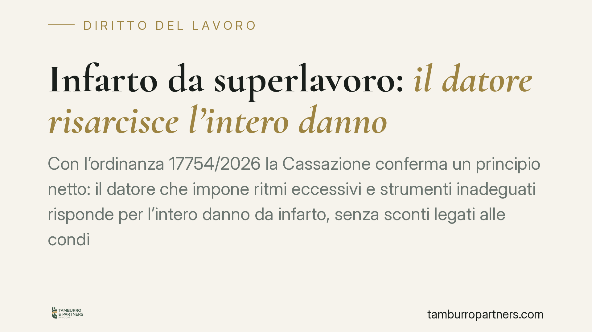

Infarto da superlavoro: il datore risarcisce l'intero danno
Con l'ordinanza 17754/2026 la Cassazione conferma un principio netto: il datore che impone ritmi eccessivi e strumenti inadeguati risponde per l'intero danno da infarto, senza sconti legati alle condizioni di salute pregresse del lavoratore. Le patologie preesistenti restano semplici concause naturali e non riducono il risarcimento. Una decisione che pesa sull'organizzazione del lavoro e sulla gestione del rischio in azienda.

Il caso
Un autista di una compagnia di trasporto locale subisce un infarto. Alla base, secondo il giudice, ci sono carichi di lavoro sproporzionati oltre il ragionevole e mezzi inadeguati alle mansioni. Il datore prova a limitare la propria esposizione invocando le patologie pregresse del dipendente, chiedendo una riduzione del risarcimento per concorso di colpa. La Cassazione respinge la linea difensiva e conferma la responsabilità integrale.
Inquadramento normativo
Il perno della decisione è l'art. 2087 del Codice civile, che impone all'imprenditore di adottare tutte le misure necessarie a tutelare l'integrità fisica e la personalità morale dei lavoratori. È una norma "aperta": obbliga il datore non solo al rispetto delle regole antinfortunistiche specifiche, ma anche a prevenire ogni rischio prevedibile secondo la migliore tecnica ed esperienza. Rientrano in questo perimetro l'organizzazione dei turni, l'entità del carico e l'idoneità degli strumenti di lavoro.
Il datore aveva richiamato l'art. 1227 c.c., che consente di ridurre il risarcimento quando il danneggiato ha concorso a produrre il danno. La Corte chiarisce però la distinzione decisiva: le patologie pregresse del lavoratore non sono un "fatto colposo" del creditore, ma mere concause naturali. Non riducono la responsabilità di chi ha innescato l'evento con la propria condotta. Se il comportamento datoriale è stato causa efficiente dell'infarto, il predisponente stato di salute non spezza il nesso e non giustifica alcuno sconto.
Resta poi ferma la logica del D.lgs. 38/2000 sul rapporto tra tutela INAIL e danno civilistico: l'indennizzo dell'istituto copre il danno biologico secondo tabelle predeterminate, ma non esaurisce il risarcimento. Il cosiddetto danno differenziale — la parte non coperta dall'INAIL — resta a carico del datore quando ne è provata la responsabilità.
Implicazioni pratiche
Per le aziende il messaggio è diretto. La responsabilità ex art. 2087 c.c. non si ferma agli infortuni classici: comprende anche le patologie derivanti da sovraccarico organizzativo. Un carico di lavoro insostenibile, protratto nel tempo, può integrare violazione dell'obbligo di sicurezza tanto quanto un macchinario privo di protezioni.
La pronuncia toglie inoltre spazio a una difesa spesso usata: la fragilità fisica del lavoratore. Chi assume un dipendente lo prende "come è", con la sua storia clinica. Se l'organizzazione del lavoro trasforma una predisposizione in evento dannoso, il costo ricade su chi quell'organizzazione ha deciso.
Per il lavoratore, la decisione conferma che un evento cardiovascolare può essere ricondotto alla responsabilità datoriale quando è provato il nesso con le condizioni di lavoro. La prova, però, resta a suo carico: occorre dimostrare l'eccessività dei ritmi, l'inadeguatezza dei mezzi e il collegamento causale con la patologia.
Il nodo della prova
Il punto operativo più delicato è probatorio. Non basta affermare di aver lavorato troppo. Servono elementi concreti: turnazioni documentate, comunicazioni sui carichi, segnalazioni interne, condizioni dei mezzi, eventuale letteratura medico-legale sul rapporto tra stress lavorativo e patologia cardiaca. Il datore, dal canto suo, deve poter dimostrare di aver adottato misure adeguate e di aver monitorato i carichi. La documentazione, in entrambe le direzioni, fa la differenza.
Cosa fare in concreto
- Datori di lavoro: mappate i carichi effettivi e non solo quelli teorici. Aggiornate il documento di valutazione dei rischi includendo lo stress lavoro-correlato e i rischi organizzativi.
- Datori di lavoro: verificate periodicamente l'idoneità degli strumenti assegnati e conservate traccia degli interventi manutentivi e delle scelte organizzative.
- Lavoratori: segnalate per iscritto sovraccarichi e criticità dei mezzi, conservando copia delle comunicazioni. La segnalazione tempestiva è un elemento probatorio prezioso.
- Lavoratori: dopo un evento di salute potenzialmente riconducibile al lavoro, raccogliete subito documentazione medica e ricostruite ritmi e condizioni operative.
- Entrambi: valutate una consulenza mirata per stimare l'esposizione al danno differenziale rispetto alla copertura INAIL.
---
*Contributo informativo a cura di Tamburro & Partners - Avv. Giuseppe Tamburro. Non costituisce parere legale.*
Ogni storia di lavoro ha i suoi tempi.
Se gestisci HR e vuoi un confronto su contenzioso, ispezioni o licenziamenti, scrivi allo studio. Ti rispondiamo entro un giorno lavorativo.